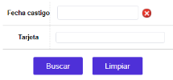
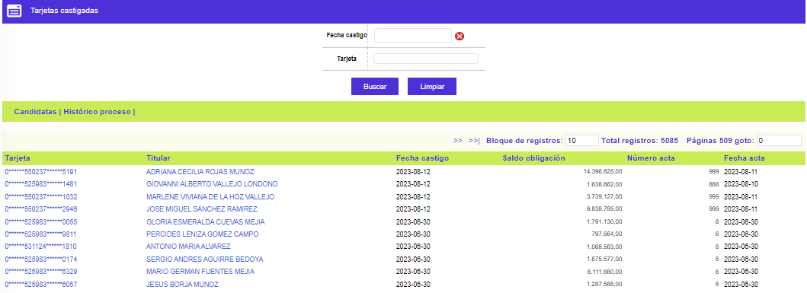

Castigo de cartera
Castigadas: Luego de ser seleccionados los productos y pasados al proceso de castigo, en este formulario se relacionan dichos clientes.
Filtro: El formulario cuenta con un filtro inicial de búsqueda, necesario para la consulta de la información:

Fecha castigo |
Permite a la entidad consultar a una fecha específica la información correspondiente a los productos que pasaron al proceso de castigo. |
Número tarjeta |
El campo número tarjeta admite cualquier dato alfanumérico de máximo 23 caracteres. Permite mayúsculas y minúsculas |
El formulario contiene los enlaces: Candidatas e Histórico proceso.

|
Número tarjeta |
Presenta los productos que han cumplido con las condiciones para entrar al proceso de precastigo. |
Titular |
Contiene el nombre del cliente principal del producto. |
Fecha castigo |
Informa la fecha en la que cada producto pasó a ser castigado. |
Saldo obligación |
Muestra el valor correspondiente a la suma de la deuda de los clientes por concepto de capital mas intereses que pasan al proceso de castigo, con el fin de informar a la entidad acerca del monto total que pasará a dicho proceso. |
Número acta |
Contiene el número del acta con el cual la entidad formaliza el castigo de los saldos pendientes de pago por parte del cliente. |
Fecha acta |
Campo en formato YYYY-MM-DD donde se muestra la fecha del acta con la que se castigaron los saldos. |
Candidatas | Precastigadas | Histórico proceso | Consulta de parámetros